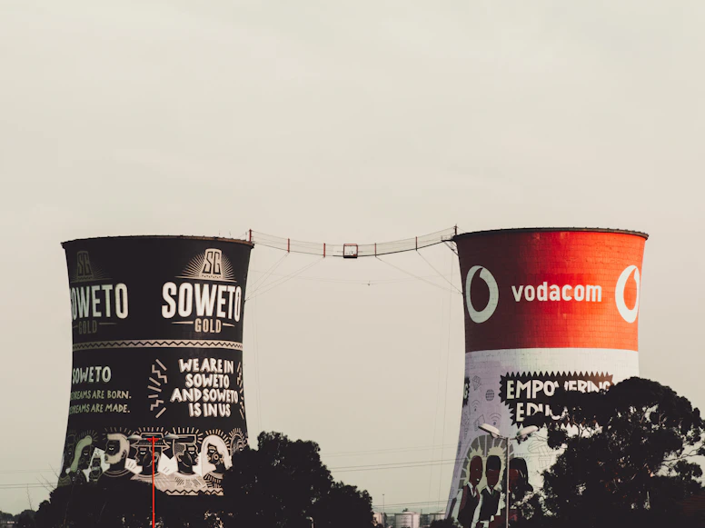
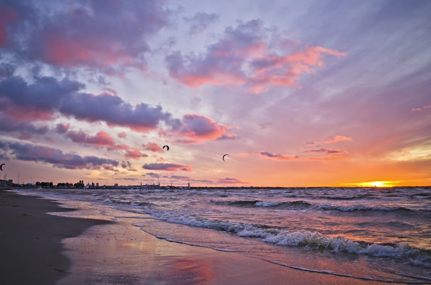
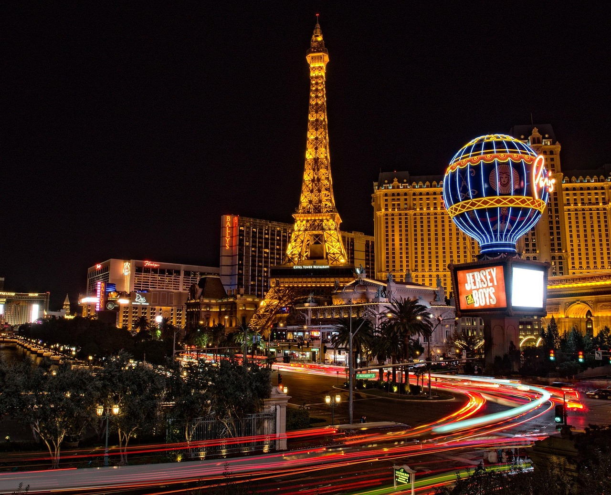
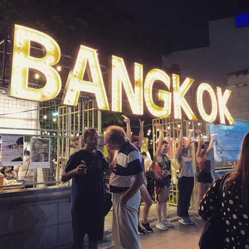

My name is Thando🌸, and I believe every journey is a story waiting to be told. From quiet streets to bustling cities, from mountain peaks to sandy shores. I travel not just to see, but to feel.
For me, traveling is about more than destinations; it’s about the people I meet, the cultures I learn from, and the little moments that stay with me long after the trip ends. This blog is my canvas, where I collect memories, capture emotions, and share the magic of the world through my eyes.
So come wander with me, let’s chase sunsets, explore hidden corners, and discover together that the world is endlessly beautiful. 🌍✈️
Recent Adventures

Soweto isn’t just where I grew up, it’s where I learned that every place has a rhythm, a story, and a soul. From the vibrant sounds of street music to the warmth of neighbors who feel like family, Soweto taught me to see the world with curiosity and heart. Every journey I take begins here.

The sun melting into the Atlantic from Signal Hill is a memory I’ll keep forever. Nature has a way of slowing you down, reminding you to breathe, and Cape Town’s sunsets did exactly that, turning an ordinary evening into a piece of art.

Paris has a way of making every corner feel like a painting. From cobbled lanes in Montmartre to the glow of the Eiffel Tower at night, the city whispered stories with every step I took. Getting lost there wasn’t a mistake, it was the best way to fall in love with Paris.

In the middle of a bustling Bangkok night market, I discovered the joy of Thai street food: spicy noodles, sweet mango sticky rice, and flavors I’d never imagined. Food is a language, and that night, I felt like I’d learned to speak a little more of the world.